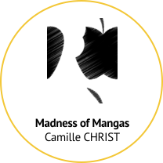
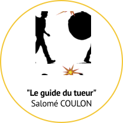
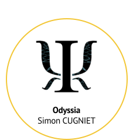
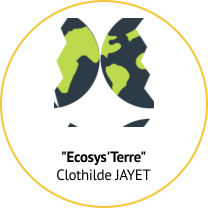
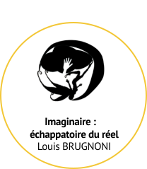
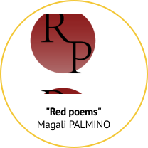
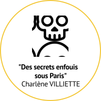

Onze de mes camarades de classe se sont également penchés sur la problématique du livre augmenté. Si vous avez aimé mon projet, je vous encourage vivement à jeter un oeil aux leurs. Ils sont tous plus originaux les uns que les autres !






